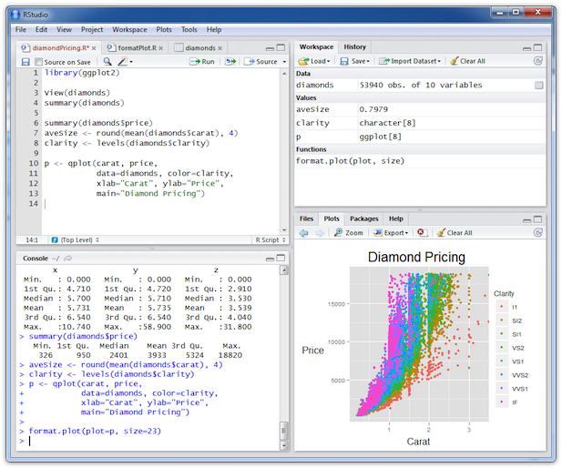

- R 소개
- 기초 함수 및 변수 다루기
- 데이터 핸들링
R 강의
첫번째 시간
김형준
Data Analyst
Contents
R
- R 언어는 통계 계산과 그래픽을 위한 프로그래밍 언어
S-PLUS -> R (1997, GUN PROJECT)
한계 : R’s biggest challenge is that most R users are not programmers
극복 : Solving the “Two-Language” Problem
설치
적절한 code editor 고르기
예) R Studio 
Introduction
- The "Comprehensive R Archive Network" (CRAN)
is a collection of sites which carry identical material, consisting of the R distribution(s), the contributed extensions, documentation for R, and binaries.
장점
- Freeware
- 대화식 프로그램
- 방대한 라이브러리
- 다양한 OS 지원 / Java, C, Fortran 프로그래밍 인터페이스
- 다양한 그래픽 지원
단점
- Freeware --> 저자 마음대로 input 설정
- 국내자료가 부족
R Demo
기초연산 & 변수 다루기
| func | func | ||
|---|---|---|---|
| + - * / ^ | 단순계산 | ||
| sqrt(x) | 제곱근 | ceiling(x) | 올림 |
| floor(x) | 내림 | abs(x) | 절댓값 |
| trunc(x) | 버림 | log(x) | 자연로그 |
| round(x) | 반올림 | round(x,n) | 소수점 n 까지 반올림 |
| factorial(n) | n! | choose(n,k) | nCk |
예)
factorial(3)
[1] 6
round(25.233,1)
[1] 25.2
패키지(라이브러리)
head(installed.packages())
## Package
## abind "abind"
## acepack "acepack"
## acss.data "acss.data"
## ACTCD "ACTCD"
## ada "ada"
## affy "affy"
## LibPath
## abind "/Library/Frameworks/R.framework/Versions/3.1/Resources/library"
## acepack "/Library/Frameworks/R.framework/Versions/3.1/Resources/library"
## acss.data "/Library/Frameworks/R.framework/Versions/3.1/Resources/library"
## ACTCD "/Library/Frameworks/R.framework/Versions/3.1/Resources/library"
## ada "/Library/Frameworks/R.framework/Versions/3.1/Resources/library"
## affy "/Library/Frameworks/R.framework/Versions/3.1/Resources/library"
## Version Priority
## abind "1.4-0" NA
## acepack "1.3-3.3" NA
## acss.data "1.0" NA
## ACTCD "1.0-0" NA
## ada "2.0-3" NA
## affy "1.44.0" NA
## Depends
## abind "R (>= 1.5.0)"
## acepack NA
## acss.data "R (>= 2.10)"
## ACTCD "R (>= 2.15.1), R.methodsS3"
## ada "R(>= 2.10),rpart"
## affy "R (>= 2.8.0), BiocGenerics (>= 0.1.12), Biobase (>= 2.5.5)"
## Imports
## abind NA
## acepack NA
## acss.data NA
## ACTCD NA
## ada NA
## affy "affyio (>= 1.13.3), BiocInstaller, graphics, grDevices,\nmethods, preprocessCore, stats, utils, zlibbioc"
## LinkingTo Suggests
## abind NA NA
## acepack NA NA
## acss.data NA NA
## ACTCD NA NA
## ada NA NA
## affy "preprocessCore" "tkWidgets (>= 1.19.0), affydata, widgetTools"
## Enhances License License_is_FOSS
## abind NA "LGPL (>= 2)" NA
## acepack NA "MIT + file LICENSE" NA
## acss.data NA "GPL (>= 2)" NA
## ACTCD NA "GPL (>= 2)" NA
## ada NA "GPL" NA
## affy NA "LGPL (>= 2.0)" NA
## License_restricts_use OS_type MD5sum NeedsCompilation Built
## abind NA NA NA NA "3.1.1"
## acepack NA NA NA "yes" "3.1.0"
## acss.data NA NA NA "no" "3.1.0"
## ACTCD NA NA NA "yes" "3.1.1"
## ada NA NA NA NA "3.1.0"
## affy NA NA NA NA "3.1.1"
패키지 설치
install.packages("dplyr")
##
## The downloaded binary packages are in
## /var/folders/_r/ytdlmf5x039_5bzh37xy121r0000gn/T//RtmpwPm9Dz/downloaded_packages
install.packages("dplyr", repos="http://cran.rstudio.com/")
패키지 정보
Help, RSiteSearch
RSiteSearch("sna")
??sna
Data Handling
- 논리
c(T,F,T)
[1] TRUE FALSE TRUE
- 숫자
is.numeric(3);is.integer(3)
[1] TRUE [1] FALSE
- 문자
is.character("Kim"); is.character(c("Kim",3,5)); is.numeric(c("Kim",3,5))
[1] TRUE [1] TRUE [1] FALSE
Data Handling
\[ \sqrt{2} \times \sqrt{2} \ne 2 \]
sqrt(2) * sqrt(2) == 2
[1] FALSE
3.55555666662314214
[1] 3.556
3.55555666662314214 == 3.556; 3.55555666662314214 == 3.55555666662314214
[1] FALSE [1] TRUE
Data Handling
options(digits=5);3.55555666662314214
[1] 3.5556
options(digits=10);3.55555666662314214
[1] 3.555556667
- 구조
- Matrix
- Data.Frame
- Data.Table
- List
Matrix
x = matrix(NA, nrow=10, ncol=3)
x
## [,1] [,2] [,3]
## [1,] NA NA NA
## [2,] NA NA NA
## [3,] NA NA NA
## [4,] NA NA NA
## [5,] NA NA NA
## [6,] NA NA NA
## [7,] NA NA NA
## [8,] NA NA NA
## [9,] NA NA NA
## [10,] NA NA NA
x[1,3]=3; x[2,]=c(1,5,7); x[3,]=seq(1,3); x[4,]=1:3; x[5,]=rep(1,3)
x[6,]=sep(5,1,by=-2);
Missing-Handling
x[is.na(x)] = 0
x
## [,1] [,2] [,3]
## [1,] 0 0 3
## [2,] 1 5 7
## [3,] 1 2 3
## [4,] 1 2 3
## [5,] 1 1 1
## [6,] 5 3 1
## [7,] 0 0 0
## [8,] 0 0 0
## [9,] 0 0 0
## [10,] 0 0 0
Data.Frame
data_ex = data.frame(height=c(168,182,175),weight=c(50,60,70),sex=c("여","남","남"))
data_ex
## height weight sex
## 1 168 50 여
## 2 182 60 남
## 3 175 70 남
data_ex$married = c(T,F,T)
data_ex[,"bmi"] = data_ex[,"height"]/data_ex[,"weight"]
data_ex
## height weight sex married bmi
## 1 168 50 여 TRUE 3.360000000
## 2 182 60 남 FALSE 3.033333333
## 3 175 70 남 TRUE 2.500000000
사용(X)
attach (data_ex);height
## [1] 168 182 175
detach(data_ex);height
## Error: object 'height' not found
사용(O)
with(data_ex, height);subset(data_ex, height>180)
## [1] 168 182 175
## height weight sex married bmi
## 2 182 60 남 FALSE 3.033333333
사용 추천
library("dplyr")
data_ex%>%filter(height>180)
## height weight sex married bmi
## 1 182 60 남 FALSE 3.033333333
Big - Data
e.x) 미국 휴스턴에서 출발하는 모든 비행기의 2011년 이착륙기록
library("hflights")
library("hflights")
dim(hflights)
## [1] 227496 21
library("hflights")
#hflights
#head(hflights)
hflights[1:3,1:5]
## Year Month DayofMonth DayOfWeek DepTime
## 5424 2011 1 1 6 1400
## 5425 2011 1 2 7 1401
## 5426 2011 1 3 1 1352
hflights_df = tbl_df(hflights)
hflights_df
## Source: local data frame [227,496 x 21]
##
## Year Month DayofMonth DayOfWeek DepTime ArrTime UniqueCarrier FlightNum
## 1 2011 1 1 6 1400 1500 AA 428
## 2 2011 1 2 7 1401 1501 AA 428
## 3 2011 1 3 1 1352 1502 AA 428
## 4 2011 1 4 2 1403 1513 AA 428
## 5 2011 1 5 3 1405 1507 AA 428
## 6 2011 1 6 4 1359 1503 AA 428
## 7 2011 1 7 5 1359 1509 AA 428
## 8 2011 1 8 6 1355 1454 AA 428
## 9 2011 1 9 7 1443 1554 AA 428
## 10 2011 1 10 1 1443 1553 AA 428
## .. ... ... ... ... ... ... ... ...
## Variables not shown: TailNum (chr), ActualElapsedTime (int), AirTime
## (int), ArrDelay (int), DepDelay (int), Origin (chr), Dest (chr),
## Distance (int), TaxiIn (int), TaxiOut (int), Cancelled (int),
## CancellationCode (chr), Diverted (int)
Mean Func
mean(hflights[,"DepTime"]);mean(hflights[,"DepTime"],na.rm=T)
R Base VS dplyr
hflights_df_rep<-rbind(hflights_df,hflights_df,hflights_df)
system.time(mean(as.data.frame(hflights_df_rep)[,"DepTime"],na.rm=T))
## user system elapsed
## 0.026 0.004 0.029
system.time(hflights_df_rep%>%select(DepTime)%>%dplyr::summarise(mean(DepTime,na.rm=T)))
## user system elapsed
## 0.006 0.000 0.007
rbind vs rbindlist
system.time(rbind(hflights_df,hflights_df,hflights_df))
## user system elapsed
## 0.538 0.157 0.775
library("data.table")
system.time(rbindlist(list(hflights_df,hflights_df,hflights_df)))
## user system elapsed
## 0.038 0.011 0.050
Dplyr


filter: Keep rows Matching Criteria
suppressMessages(library(dplyr))
library(hflights)
flights <- tbl_df(hflights)
flights %>% filter(Month==1, DayofMonth==1)
## Source: local data frame [552 x 21]
##
## Year Month DayofMonth DayOfWeek DepTime ArrTime UniqueCarrier FlightNum
## 1 2011 1 1 6 1400 1500 AA 428
## 2 2011 1 1 6 728 840 AA 460
## 3 2011 1 1 6 1631 1736 AA 1121
## 4 2011 1 1 6 1756 2112 AA 1294
## 5 2011 1 1 6 1012 1347 AA 1700
## 6 2011 1 1 6 1211 1325 AA 1820
## 7 2011 1 1 6 557 906 AA 1994
## 8 2011 1 1 6 1824 2106 AS 731
## 9 2011 1 1 6 654 1124 B6 620
## 10 2011 1 1 6 1639 2110 B6 622
## .. ... ... ... ... ... ... ... ...
## Variables not shown: TailNum (chr), ActualElapsedTime (int), AirTime
## (int), ArrDelay (int), DepDelay (int), Origin (chr), Dest (chr),
## Distance (int), TaxiIn (int), TaxiOut (int), Cancelled (int),
## CancellationCode (chr), Diverted (int)
select: Pick columns by name
flights %>% select(DepTime, ArrTime, FlightNum)
arrange: Reorder Rows
flights %>%
select(UniqueCarrier, DepDelay) %>%
arrange(DepDelay) # arrange(desc(DepDelay))
## Source: local data frame [227,496 x 2]
##
## UniqueCarrier DepDelay
## 1 OO -33
## 2 MQ -23
## 3 XE -19
## 4 XE -19
## 5 CO -18
## 6 EV -18
## 7 XE -17
## 8 CO -17
## 9 XE -17
## 10 MQ -17
## .. ... ...
mutate: Add New Variables
flights %>%
group_by(Dest) %>%
summarise(avg_delay = mean(ArrDelay, na.rm=TRUE))%>%slice(1:2)
## Source: local data frame [2 x 2]
##
## Dest avg_delay
## 1 ABQ 7.226258993
## 2 AEX 5.839436620
a = flights %>%
group_by(UniqueCarrier) %>%
summarise(mean_Cancelled = mean(Cancelled),mean_Diverted = mean(Diverted))
a%>%slice(1:3)
## Source: local data frame [3 x 3]
##
## UniqueCarrier mean_Cancelled mean_Diverted
## 1 AA 0.01849568434 0.001849568434
## 2 AS 0.00000000000 0.002739726027
## 3 B6 0.02589928058 0.005755395683
b = flights %>%
group_by(UniqueCarrier) %>%
summarise_each(funs(mean), Cancelled, Diverted)
colnames(a) = colnames(b)
all.equal(a,b)
## [1] TRUE
planes<- group_by(flights, TailNum)
delay<-summarise(planes, count=n(), m_dist = mean(Distance,na.rm=T),
m_delay = mean(ArrDelay,na.rm=T))%>%filter(m_dist > 0, m_delay > 0, count < 800)
library(ggplot2)
ggplot(delay, aes(m_dist, m_delay)) + geom_point(aes(size = count)) + geom_smooth()
plot(delay[,"m_dist"][[1]],delay[,"m_delay"][[1]],xlab="m_delay",ylab="m_delay",cex=delay[,"count"][[1]]/300)
lines(smooth.spline(delay[,"m_dist"][[1]],delay[,"m_delay"][[1]]),col="red")
데이터 불러오기
- read.csv # base
- fread # data.table
여러개 데이터
fread_multi <- function(allFiles){
mc <- detectCores();
cl <- makeCluster(mc);
DT <- parLapply(cl,allFiles,fun=fread,
header=T,
stringsAsFactors=F,
colClasses=c("character","numeric","character",rep("numeric",48)))
#call fread on each core (well... using each core at least)
stopCluster(cl);
DT <- rbindlist(DT);
return(DT);
}
write.csv / read.csv
path_dir = "/Users/kimhyungjun/Dropbox/R_lecture/mydeck/r_slide/"
write.csv(delay, file=paste(path_dir,"delay.csv",sep=""),fileEncoding="CP949",
row.names=FALSE)
header, stringAsFactors, colClasses, fileEncoding, row.names
delay_rep = read.csv(file=paste(path_dir,"delay.csv",sep=""),fileEncoding="CP949")
all.equal(as.data.frame(delay), delay_rep)
delay_rep = read.csv(file=paste(path_dir,"delay.csv",sep=""),fileEncoding="CP949",stringsAsFactors = F)
all.equal(as.data.frame(delay), delay_rep)
여러개 데이터
\[ parallel > lapply \simeq foreach\]
- lapply
- paraellel
- foreach